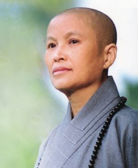

<<認識慈濟>>
 本校創辦人是財團法人佛教慈濟慈善事業基金會 證嚴法師。法師以慈悲喜捨的大願，起救苦救難的大行，在東台灣創建了千秋萬世的濟人志業。 秉持誠正信實的處事原則，把社會大眾捐獻的善款，涓滴不漏地全做了利益眾生的事
<<教育理念>> 「專業」是我們從事教育工作的「本份」； 「人文」是我們從事教育工作的「文化」； 「服務」是我們從事教育工作的「態度」； 「卓越」是我們從事教育工作的「使命」。